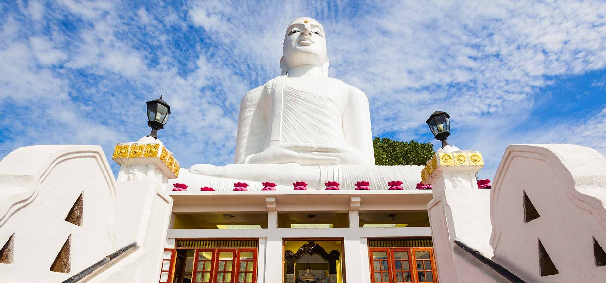

The towering white Buddha statue seated in Dhyana Mudra posture, overlooking the entire Kandy valley.
The Bahirawakanda Vihara Buddha Statue is one of the most prominent landmarks in Kandy town. Standing at 88 feet tall, it is visible from almost anywhere in the city.
The climb to the statue's base is rewarding for the panoramic view it provides of the city, the lake, and the surrounding mountains. At night, the statue is lit up with incredible brilliance, shining like a beacon over the dark hills.
Back to Kandy Hub